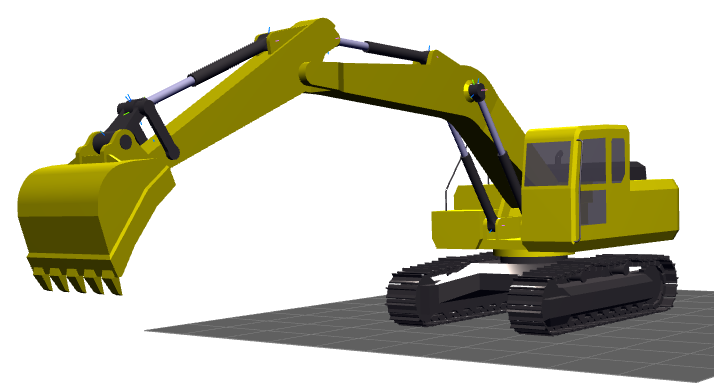
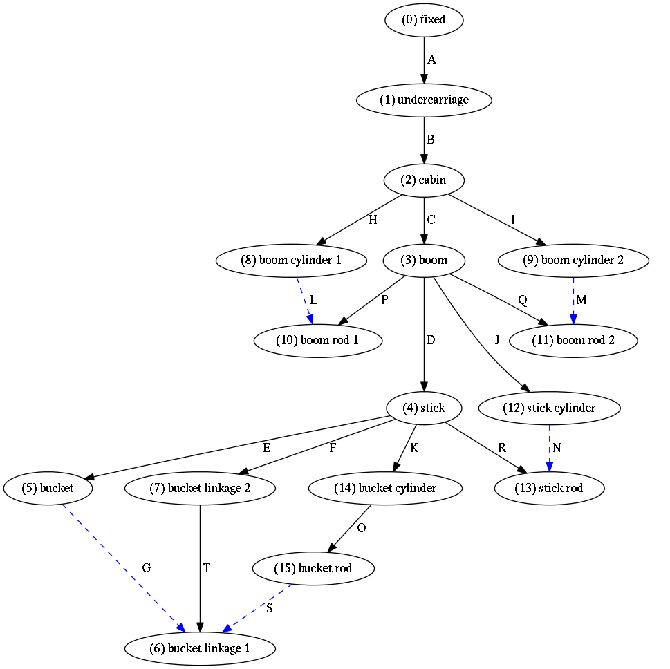
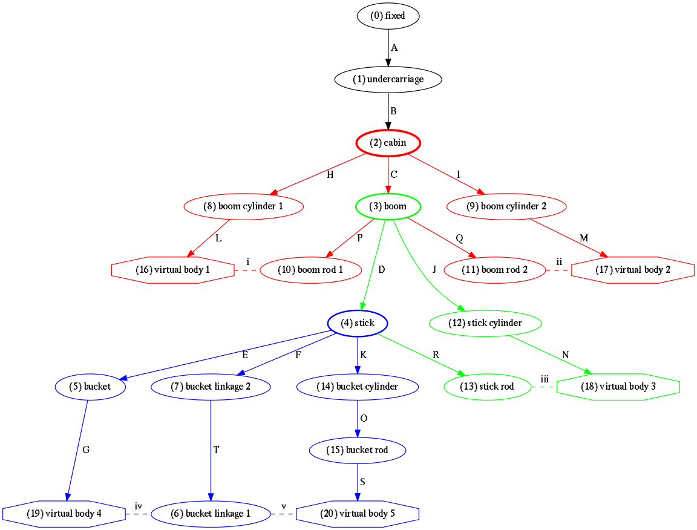
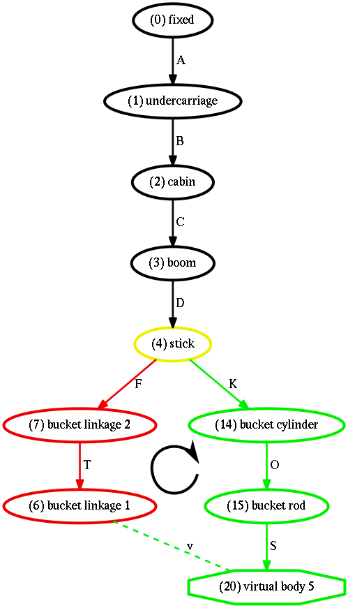
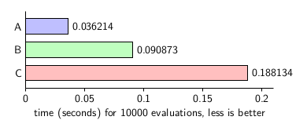
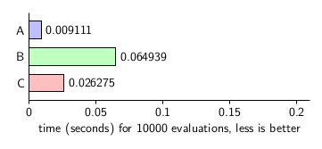

Topology¶
Graph Theory for Multibody Systems¶
In this section, a model of a hydraulic excavator is used to illustrate basic concepts from graph theory.


Figure 1: A Hydraulic Excavator
The excavator model’s topology can be described as a directed graph with a number of bodies comprising the nodes of the graph, connected by a number of joints as edges of the directed graph. The excavator model consists of 15 bodies connected by 20 joints, shown in Table 1. The bodies and joints are listed in an arbitrary, user–defined order. This organization of bodies and joints is similar to how mechanism topology is specified in the Shift JSON file format. The ID is provided here only as an aid in interpreting the following development and need not be included in the JSON file. Note that the zero identifier is reserved for the fixed inertial reference frame.
| ID | Body Name | ID | Joint Name |
|---|---|---|---|
| 1 | undercarriage | A | fixed \(\rightarrow\) undercarriage |
| 2 | cabin | B | undercarriage \(\rightarrow\) cabin |
| 3 | boom | C | cabin \(\rightarrow\) boom |
| 4 | stick | D | boom \(\rightarrow\) stick |
| 5 | bucket | E | stick \(\rightarrow\) bucket |
| 6 | bucket linkage 1 | F | stick \(\rightarrow\) bucket linkage 2 |
| 7 | bucket linkage 2 | G | bucket \(\rightarrow\) bucket linkage 1 |
| 8 | boom cylinder 1 | H | cabin \(\rightarrow\) boom cylinder 1 |
| 9 | boom cylinder 2 | I | cabin \(\rightarrow\) boom cylinder 2 |
| 10 | boom rod 1 | J | boom \(\rightarrow\) stick cylinder |
| 11 | boom rod 2 | K | stick \(\rightarrow\) bucket cylinder |
| 12 | stick cylinder | L | boom cylinder 1 \(\rightarrow\) boom rod 1 |
| 13 | stick rod | M | boom cylinder 2 \(\rightarrow\) boom rod 2 |
| 14 | bucket cylinder | N | stick cylinder \(\rightarrow\) stick rod |
| 15 | bucket rod | O | bucket cylinder \(\rightarrow\) bucket rod |
| P | boom rod 1 \(\rightarrow\) boom | ||
| Q | boom rod 2 \(\rightarrow\) boom | ||
| R | stick rod \(\rightarrow\) stick | ||
| S | bucket rod \(\rightarrow\) bucket linkage 1 | ||
| T | bucket linkage 1 \(\rightarrow\) bucket linkage 2 |
Click here to see how the information in Table 1 is encoded in a Shift JSON file.
Incidence Matrix¶
The incidence matrix, \(\Gamma\), is an important tool used to describe the connectivity of bodies and joints in a multibody system. From the body–joint–body information in Table 1, the incidence matrix for the excavator is given in Eq. (1). Zeros are removed from sparse matrices to improve view clarity. Each column corresponds to a unique body and each row corresponds to a joint. The -1 and +1 in each row describe the sense of the joint.
An entry of row b and column h of \(\Gamma\) is defined as:
For example, the -1 and +1 in the first row indicate that joint A is oriented from body 0 (i.e. the fixed inertial reference frame) to body 1 (i.e. the undercarriage.)
It is strongly emphasized that these large sparse matrices need never be formed in multibody dynamics code. Ultimately, other more compact representations of topology allow more efficient numerical implementation of kinematics and dynamics. Nevertheless, a description of incidence matrix is provided here as it allows clearly formulating the equations of motion for complex multibody systems in the language of matrices. Later in this document, more compact representations of topology will be introduced.
Spanning Tree¶
The subset of graph edges containing all nodes, but no loops, is the spanning tree. The spanning tree can be identified from the incidence matrix by permuting Eq. (1) to reduced-row echelon form as:
The graph edges above the dashed line in Eq. (2) comprise the arcs of the directed graph and form the spanning tree of the mechanism. The arcs represent the row–space of \(\Gamma ^T\). The remaining edges required to reconnect the spanning tree comprise the chords of the directed graph. Consequently, the number of chords is equal to the number of independent loops in the directed graph :cite:`uicker2013`.


Figure 2: Spanning tree of hydraulic excavator
Path Matrix¶
The path matrix is another important tool
Jacobian Matrix obtained using Graph Theory¶
A corollary to the incidence matrix, the connectivity matrix, is formed by element-wise replacement of the +1 and -1s in \(\Gamma^T\) with positive or negative 6x6 identity matrices. The partial velocity matrix, \(H\), is a block matrix containing the 6x1 influence coefficient matrices (introduced in the previous section) along the diagonal. The partial velocity matrix provides a mapping of joint velocities to relative velocities across joints.
Once the arcs and chords of the system have been identified, Eq. (14) can be block partitioned as:
which yields:
and
Substituting Eq. (4) into Eq. (5) and rearranging yields:
Arranging Eq. (6) in matrix form yields
Equation (7) represents the chord-loop velocity constraints for a mechanism, and from it the constraint Jacobian matrix is identified as
Equation (8) can be used to find the Jacobian matrix for the excavator model as
where the \(h_j\) are \(6\times1\) influence coefficient matrices for each of the respective joints. The block row identifier labels, i through v, correspond to a minimal set of independent kinematic loops in the mechanism. Note that the number of loops is equal to the number of chords in the directed graph.
Parent Child List and Binary Tree¶
The spanning tree contains only the subset of user–defined joints that were classified as arcs of the directed graph. A simple modification to Eq. (2) effectively converts all user–defined joints to arcs of the directed graph. Cut the child-side Cartesian frame of each chord joint from its embedding body and consider this released frame as a virtual, massless body. Each chord joint will then have its own unique child body and will become an integral part of an expanded spanning tree. This process will have effectively cut open all kinematic loops and replaced all chords by arcs. For each virtual body, six chord–loop constraint equations are then imposed to connect the virtual body back to its original embedding body.
In the excavator example, the child–side frames of the five chord joints are cut from their embedding bodies and converted into virtual, massless bodies. The virtual bodies are then constrained so that their position, orientation, velocity, and acceleration match the node locations in the respective embedding bodies from which they were cut. With this modification, the chords of the directed graph have been converted to rigid constraints. This simple modification requires no changes to Eq. (9). When the chord loops are cut, the virtual body number and the original chord’s embedding (positively oriented) body id are recorded for later reuse. Table 2 shows this information for the hydraulic excavator model.
| loop id | virtual body id | embedding body id |
|---|---|---|
| i | 16 | 10 |
| ii | 17 | 13 |
| iii | 18 | 13 |
| iv | 19 | 6 |
| v | 20 | 6 |
A new spanning tree, modified to include the virtual bodies, is shown in Fig. 3.

Figure 3: Modified spanning tree for hydraulic excavator with chords converted to arcs
Here the solid arrows correspond to the joints that form the arcs in the mechanism, and the dashed lines correspond to the new constraints imposed. Virtual, massless bodies are designated by octagons.
While the incidence matrix in Eq. (2) provides all the necessary information for traversing the directed graph, navigating through its many ones and zeros is cumbersome. To avoid this problem the excavator’s graph may also be represented more compactly as a parent–child list and binary tree :cite:`cormen2009introduction`. The parent–child list facilitates traversal from any node of the spanning tree upward, toward the root element. The index into the parent–child list, \(P\), is each body or node’s unique ID number, and the value at that index is the node’s unique parent node ID number. A binary tree facilitates traversal of the graph from any node of the directed graph away from the root element, towards the leaves of the spanning tree. Two lists, \(L\) and \(R\), are used to represent the binary tree. The first list, \(L\), is called the left or descendent list and contains the index of each node’s first descendant node, if present. The second list, \(R\), is called the right or sibling list and contains the node’s first sibling, if present. Additionally, an index list contains the body indices in original user–defined order. For the excavator model, the four lists are shown in Table 2.
| index | 0 | 1 | 2 | 3 | 4 | 5 | 6 | 7 | 8 | 9 | 10 | 11 | 12 | 13 | 14 | 15 | 16 | 17 | 18 | 19 | 20 |
|---|---|---|---|---|---|---|---|---|---|---|---|---|---|---|---|---|---|---|---|---|---|
| P | -1 | 0 | 1 | 2 | 3 | 4 | 7 | 4 | 2 | 2 | 3 | 3 | 3 | 4 | 4 | 14 | 8 | 9 | 12 | 5 | 15 |
| L | 1 | 2 | 3 | 4 | 5 | 19 | 0 | 6 | 16 | 17 | 0 | 0 | 18 | 0 | 15 | 20 | 0 | 0 | 0 | 0 | 0 |
| R | 0 | 0 | 0 | 8 | 10 | 7 | 0 | 13 | 9 | 0 | 11 | 12 | 0 | 14 | 0 | 0 | 0 | 0 | 0 | 0 | 0 |
Kinematic Substructuring¶
In the previous section, a compact formulation of the equations of motion was derived and an efficient solution method was discussed. One bottleneck in the solution process is the Gaussian Elimination with Complete Pivoting (GECP) algorithm itself, which is a triple-loop procedure requiring \(r(6mn - 3(m+n)r + 2r^2)/3\) FLOPS, where \(m\) is the number of rows, \(n\) is the number of columns and \(r\) is the rank of the matrix. Furthermore, GECP requires both row and column permutations during factorization, which necessitates non-unit stride vector copies, which is not optimal for memory access. Note that other algorithms have been proposed for the automatic identification of independent and dependent variables, for example, based on Singular Value Decomposition (SVD) :cite:`mani1985,wehage1993` or Congruency Transformations :cite:`loduha1995`. Note that the run–time of these alternative methods is increased over GECP; for example, SVD requires \(4m^2n+22n^3\) FLOPS using the R-SVD algorithm :cite:`golub1996matrix`.
Although the modified GECP algorithm is more efficient than alternative partitioning strategies, due to its \(\mathcal{O}(n^3)\) complexity and memory access requirements, calling the GECP algorithm should be avoided whenever possible. Certainly, one strategy to improve performance would be to call GECP only once at the beginning of a program’s execution. As kinematic bifurcations are common in even relatively simple mechanisms and the primary system of constraints are subject to change, this approach comes at the expense of robustness and is not recommended. Alternatively, one could conservatively call GECP at every time step—and pay a substantial performance penalty. Other approaches call GECP at regular intervals or use a heuristic method to determine when to repartition the Jacobian matrix. Regardless of the specific method used, the robust numerical solution of dynamic equations may require performing GECP many times in the course of a simulation, and strategies to improve GECP algorithm performance are important.
Block–diagonalization is a well–known technique for breaking a large system of equations into smaller, more manageable pieces, thereby increasing computational efficiency. Several algorithms exist in the literature to block partition matrices, such as described in :cite:`acer2011recursive,uccar2007partitioning,steward1965partitioning,aykanat2004permuting,cave2014block`. However, these methods are generally unsuitable for block partitioning mechanism Jacobian matrices because they involve taking linear combinations of variables in addition to row and column permutations; are designed for special–purpose matrices (i.e. square or hermitian); or do not fully uncouple substructures (i.e. the resulting partitioning scheme has overlap or is in single–bordered, K–way form :cite:`aykanat2004permuting`).
At this point in the analysis, information regarding the system topology required to solve Eq. (11) has been determined. Performing GECP on Eq. (9) would require 9000 FLOPs, assuming the Jacobian matrix has full–row rank (i.e \(m=30\), \(n=20\) and \(r=15\)). In the following section, it will be shown how kinematic substructures can be automatically identified and uncoupled, allowing for an increase in computational efficiency.
The kinematic substructuring algorithm requires traversing the directed graph of the mechanism, and the spanning tree is an essential tool for this purpose.
Kinematic Substructuring Algorithm¶
The kinematic substructuring process is divided into the following five steps:
Identify the level of each node in the spanning tree¶
Using the parent–child list and binary tree, the increasing level of each body in the spanning tree, moving away from the fixed inertial reference frame, is identified and stored in a node–level list. The parent–child list allows one to easily determine if node \(k\) is in the kinematic path of node \(j\) using Algorithm 1:
def inPath(j, k, P): while(j > 0): if j is k: return true: j = P[j] return false
Using an iterative preorder binary tree traversal :cite:`cormen2009introduction` and a temporary stack variable, \(S\), a \(levels\) list can be generated. The \(levels\) list is of equal length to the \(index\) list introduced above. In the following algorithm descriptions, list manipulation is described as follows: list.pop() indicates removing an element from the end of the list, and list.pop(j) indicates removing an element from the list at the specified index, \(j\). Similarly, list.append(1) indicates appending the value \(1\) to the end of the \(list\). All pseudocode is described using the C/python programming convention for indexing. Therefore, list.pop(0) indicates removing the first element from the list. Additionally, list[1:end] represents a subset of the \(list\) containing elements from the second value up to and including the last element.
def detectLevels(P, L, R): S = [] levels = [0] k = L[0] while(S or k > 0): if k>0: levels[k] = levels[P[k]] + 1 if R[k] > 0: S.append(R[k]) k = L[k] else: k = S.pop() return levels
The \(levels\) list for the excavator model is shown in `Table 3`_.
| index | 0 | 1 | 2 | 3 | 4 | 5 | 6 | 7 | 8 | 9 | 10 | 11 | 12 | 13 | 14 | 15 | 16 | 17 | 18 | 19 | 20 |
|---|---|---|---|---|---|---|---|---|---|---|---|---|---|---|---|---|---|---|---|---|---|
| levels | 0 | 1 | 2 | 3 | 4 | 5 | 6 | 5 | 3 | 3 | 4 | 4 | 4 | 5 | 5 | 6 | 4 | 4 | 5 | 6 | 7 |
Identify loop members¶
For each grouping in `Table 3`_, each loop’s members can be identified using Algorithm 3 below and stored in the list \(members\), an initially empty list of lists equal to the number of chord loops, i-v. The first and second while loops are used to decrement each node index in the kinematic path until node indices in the positive and negative branches of the loop are at the same level in the spanning tree. Once the decremented node indices have reached the same level, they will be decremented together by level until the loop’s unique base node is identified. During this process, the node indices are stored in the corresponding list. At the end of the process, the last node index that was pushed to list is removed, as the base node will have been written twice, and the sequence of the nodes is reversed. The final \(members\) list contains each loop’s base node first, followed by the loop members in monotonically increasing level order.
def detectLoopMembers(P, levels, loopCount, negativeNodes, positiveNodes): loopMembers = [[] for j in range(loopCount)] for j in range(loopCount): negative = negativeNodes[j] positive = positiveNodes[j] loopMembers[j].append(negative) loopMembers[j].append(positive) while levels[positive] > levels[negative]: positive = P[positive] loopMembers[j].append(positive) while levels[negative] > levels[positive]: negative = P[negative] loopMembers[j].append(negative) while positive is not negative: negative = P[negative] positive = P[positive] loopMembers[j].append(negative) loopMembers[j].append(positive) loopMembers[j].pop() loopMembers[j].reverse() return loopMembers

Figure 4: Loop v members and nodes in kinematic path of loop v’s base node.
Order loops by level¶
At this point the loops are rearranged by sorting their base nodes into monotonically increasing order by level in the spanning trees. After processing by Algorithm 2 and sorting, the loop ordering sequence and loop member lists are shown in Table 4.
| loop ID | base node | loop members |
|---|---|---|
| i | 2 | 2, 3, 8, 10, 16 |
| ii | 2 | 2, 3, 9, 11, 17 |
| iii | 3 | 3, 4, 12, 13, 18 |
| iv | 4 | 4, 7, 5, 6, 19 |
| v | 4 | 4, 7, 14, 15, 6, 20 |
In the excavator example, no reordering of the loops was necessary, as their base nodes were already arranged by monotonically increasing level order.
Merge loops into kinematic substructures¶
Any given mechanism will consist of at least one kinematic substructure, i.e. the entire mechanism. Therefore, the loop–merging process begins by assigning the first loop, i, to the first substructure. Each successive loop is then inspected to determine if it should be added to any of the existing kinematic substructures or if the loop should be assigned to a new substructure.
A candidate chord–loop will be merged with a kinematic substructure if the substructure and the merge candidate have at least one body and one joint in common. Note, however, that the graph edge (joint) labels are not required for merging. The merging process can be performed using only the parent–child list and loop member assignments. A candidate loop will be merged with a kinematic substructure if the substructure’s base node matches the candidate’s base node or if it is in the candidate base node’s ancestor path, and if the candidate loop and substructure have at least one descendant node in common. The term descendant node refers to any loop member that is not the loop’s base node, i.e. the subset of loop members, loop[1:end]. This applies to kinematic substructures as well, where loop[1:end] is the union of all merged chord-loop bodies, excluding the unique base body at the lowest level in the spanning tree.
def detectSubstructures(loopMembers, P): substructures = [[]] substructures[0].append(loopMembers.pop(0)) while(loopMembers): mergeCandidate = loopMembers.pop(0) merge = false for substructure in substructures: if inPath(mergeCandidate[0], loop[0], P): if any(mergeCandidate[1:end] in loop[1:end]): substructure.append(mergeCandidate) merge = true break if merge: break if not merge: substructures.append([mergeCandidate]) return substructures
In the present example, the base node of loop i is found to be in the ancestor path of loop ii’s base node. Inspecting the descendant members of loop ii reveals that node 3 is also a child of loop i, indicating that loop ii should be merged into the first kinematic substructure.
Moving on to loop iii, an ancestor of loop iii’s base node is found to be the base node of the first kinematic substructure. However, none of the descendant members of loop iii are members of loops i or ii, and therefore loop iii is not a member of the first kinematic substructure. Thus loop iii is assigned to a second kinematic substructure.
Loops iv and v are then analyzed. An ancestor of the base node of loop iv is found to be in the kinematic path of the base node of loops i and ii in the first kinematic substructure, however, none of the children of loop iv’s base node is a member of loops i and ii. Therefore, loop iv is not a member of the first substructure. Similarly loop iv is not a member of the second substructure. Thus a third substructure is designated, to which loop iv is assigned. Similarly, loop v is not a member of the first and second substructures. However, one child of loop v’s base node is a member of the third substructure, so loop v is assigned to it. The substructures and their corresponding loops are shown in Table 5.
| substructure | loops |
|---|---|
| 1 | i, ii |
| 2 | iii |
| 3 | iv, v |
Reorder bodies and joints¶
In this last step the joints are ordered by level in the spanning tree and permuted according to their kinematic substructure assignments, which requires creating a short list of bodies that are either:
- not a member of any kinematic substructure, or
- are the base node of a kinematic substructure
In the excavator example, the short list of bodies, ordered by level in the spanning tree becomes: (0) fixed, (1) undercarriage, (2) cabin, (3) boom, and (4) stick. From the bodies list, a short list of joints is also created. Each joint in the joint short list is the parent joint associated with the corresponding body in the body short list. The (0) fixed body has no parent, so the joints in the joint short list for the present example are: A, B, C, and D.
From the joint short list, an expanded joint list is created. For each joint in the joint short list, perform the following operations:
- if the joint is not a member of a kinematic substructure, append the joint to the expanded joint list, otherwise:
- append the joint associated with the base node of the kinematic substructure to the expanded joint list only if it has not been appended in a previous step. Then, append the remaining joints associated with nodes in the kinematic substructure, ordered by level in the spanning tree.
After the final sorting and expansion operation, the revised Jacobian matrix becomes
and the block submatrices \(J_1\) – \(J_3\) associated with each kinematic substructure are:
and
GECP can then be applied independently to each of the Jacobian submatrices. Assuming that each Jacobian submatrix has full row rank, GECP would require a total of 1008 FLOPs, an approximate order of magnitude reduction in floating point operations. As the operations count is not always a direct measure of numerical efficiency, in the next section a numerical experiment is carried out to compare the kinematic substructuring technique to other methods.
Although the process for automatically determining kinematic substructures is described in specific context to mechanisms, the substructuring algorithm is a general graph partitioning method that may have applications in other disciplines. To facilitate transposition to other subject areas, note that the Jacobian matrix, \(J\), is a byproduct of the right null space of the directed graph, \(\Gamma^T\). The right null space of the directed graph is also referred to as the loop or circuit matrix in the literature. Therefore, the methods described in this section may be adapted to other subjects by replacing any reference to the Jacobian matrix with the more general loop matrix.
Numerical Experiment¶
To investigate the numerical efficiency of kinematic substructuring, GECP of the block–diagonalized Jacobian matrix in Eq. (10) is computed using (a) the kinematic substructuring method applied to each of the three block submatrices, \(J_1\)–\(J_3\), (b) the sparse matrix algebra MA48 factorization algorithm (part of the Harwell Subroutine Library (HSL) :cite:`duff1996design` applied only to the nonzero terms of the \(30\times 20\) Jacobian matrix, \(J\) and (c) the full, dense matrix algebra applied to the full \(30\times 20\) Jacobian matrix, \(J\).
In sparse matrix methods, only the non–zero terms of the coefficient matrices are stored. Therefore, memory usage and floating point operations required to carry out sparse-matrix algebra is reduced compared to full, dense algebra. Indeed, many large scientific problems, such as the numerical solution of finite element analysis (FEA) equations, would be intractable without the use of sparse-matrix methods. Note, however, that in sparse-matrix methods, the set of instructions to perform the operations is more complicated than full, dense matrix algebra. Furthermore, matrix coefficients may not be stored or accessed in contiguous memory, which may increase cache misses :cite:`toledo1997improving`. The use of sparse-matrix algebra is expected to offer little or no benefit when the coefficient matrices are small and/or dense. In contrast to the large, highly sparse equations found in other disciplines, the equations of motion for many multibody systems are typically smaller and moderately sparse. Nonetheless, Gonzalez et al. :cite:`gonzalez2008effect` showed that sparse-matrix methods do offer some performance benefit over full, dense matrix algebra, considering the special structure of dynamics equations, even for small to moderate problem sizes.
Block–diagonalization via kinematic substructuring is essentially a hybrid of full and sparse matrix methods. As discussed in the previous section, full, dense matrix algebra can be applied to each of the Jacobian matrices \(J_1\)–\(J_3\) at a small fraction of the operations required to apply full matrix algebra to the entire Jacobian matrix, \(J\). Furthermore, these block submatrices are dense, and sparse-matrix algebra is expected to have increased complexity compared to full, dense algebra applied to them individually.
The HSL MA48 factorization algorithm was chosen as the reference sparse implementation because HSL is well–known for its efficient, well–tested, and high–quality numerical algorithms. HSL subroutines are commonly used in many commercial and research–oriented multibody dynamics solvers :cite:`gonzalez2008effect,hidalgo2011high`, and the MA48 algorithm is suitable for nonsymmetric, rectangular matrices.
The HSL MA48 algorithm consists of three primary components. The first analyze component analyzes the specific structure of a coefficient matrix and generates an initial factorization. The second factorize component is used to compute the factors of a matrix with a known sparsity pattern determined in the analyze phase. In factorize, a fast flag can be set. If the fast flag evaluates to true, the factorization sequence from the previous call to analyze or factorize is used; if the fast flag evaluates to false, the factorization sequence may change. The third component of HSL MA48 is a solve phase, which uses the matrix factors to solve a set of linear equations. For benchmarking purposes, only the first and second components of HSL MA48 are considered.
The analyze component of HSL MA48 is analogous to block–diagonalization via kinematic substructuring described above. The analyze phase would be called once at the beginning of a simulation for the particular sparsity pattern of the Jacobian matrix. Analyze would not be called again unless a pivot has come too close to zero or the system’s topology has changed. Factorize, with the fast flag set to false, is analogous to gaussian elimination with partial pivoting, and factorize, with the fast flag set to true, is analogous to gaussian elimination without pivoting.
To compare the efficiency of kinematic substructuring to sparse and full matrix factorization, a computer program was written in the C programming language that closely follows the development of this paper. The bodies and joints of the excavator model are specified in an arbitrary user–defined order in a text file. When the program is launched, the bodies and joints are loaded into computer memory using a linked–list data structure. Bodies and joints are permuted according to the kinematic substructing algorithm using memory pointers. Once the permutation process is complete, quantities are copied to contiguous memory, and Newton–Raphson iteration is applied to eliminate constraint errors, if present. Finally, the spanning tree is traversed to update the terms of either (a) the block diagonal submatrices \(J_1\)–\(J_3\), (b) a sparse matrix representation of the Jacobian, or (c) the full dense Jacobian matrix, \(J\). Once the terms are computed, the Jacobian matrix is passed to one of the three algorithms for matrix factorization. The Jacobian update and factorization steps are repeated 10000 times for each method.
The numerical experiments were carried out on a 6–core AMD Phenom II X6 1090T Processor with 16GB of RAM, running the 64 bit 3.18.6-1 Arch Linux kernel. The program was compiled using the GNU Compiler Collection (GCC) C compiler, version 4.9.2-4. The HSL MA48 algorithm is used in conjunction with the ATLAS (Automatically Tuned Linear Algebra Software) :cite:`whaley05minimizing` implementation of BLAS (Basic Linear Algebra Subprograms), whereas the GECP algorithm for full, dense matrix factorization was programmed wholly without the use of BLAS. Refer to reference :cite:`gonzalez2008effect` for more details of various BLAS implementations in multibody dynamics.
Results of the experiment are provided in Fig. 5. Kinematic substructuring provides an approximate \(5\times\) speedup over full, dense matrix algebra. The speedup is not directly proportional to the \(9\times\) reduction in FLOPS due to the increased number of function evaluations. Nonetheless the \(5\times\) speedup represents a considerable savings over full, dense GECP. MA48’s performance was between the two methods. Kinematic substructuring was more than two times faster than MA48, even without the use of BLAS.

Figure 5: Run times for 10000 gaussian elimination evaluations with complete row and column pivoting for A: Block–diagonalization via kinematic substructuring, B: Sparse factorization using HSL MA48 algorithm, and C: Full, dense gaussian elimination
The results depicted in Fig. 5 represent the portion of simulation time required to determine the set of independent and dependent generalized coordinates if GECP were conservatively called at every time step during numerical integration. As discussed in the introduction, GECP need not be called at every time step. If the set of dependent and independent variables remains unchanged between two integration steps, the factorization pivot sequence may be reused. However, it is strongly emphasized that if this approach is taken, for robustness, GECP must be reapplied as the mechanism approaches a bifurcation configuration. In the present example, a heuristic method for monitoring the stability of the choice of dependent and independent variables based on :cite:`mittra1975theuseof` is used to determine when to reapply GECP. The ratio of largest to smallest pivots of the largest nonsingular submatrix of \(J\) in full, dense GECP or of the block–diagonal matrices \(J_1\)–\(J_3\) in block–diagonalized GECP is monitored. If the pivot ratio becomes greater than a user–specified threshold obtained from the initial starting value, then GECP is applied again. The logic to check the pivot ratio is not added to the HSL MA48 fast factorization subroutine. Instead, MA48 returns an error when a pivot approaches machine roundoff error during the fast factorization process, which may be used as a basis to call factorization with the fast flag set to false again to determine a new set of dependent and independent variables.

Figure 6: Run times for 10000 gaussian elimination evaluations without pivoting for A: Block–diagonalization via kinematic substructuring, B: Sparse ``fast–factorization’’ using HSL MA48 algorithm, and C: Full, dense gaussian elimination without pivoting
When the pivot sequence is reused from the initial call to GECP, block–diagonalization via kinematic substructuring is approximately \(7\times\) faster than MA48’s fast factorize routine, even accounting for the additional check on pivot ratios. The factorization and pivot ratio calculation for the entire full, dense Jacobian was also more than twice as fast as sparse factorization with the fast flag set to true.
The results of Figs. 5 and 6 indicate that block–diagonalization via kinematic substructuring requires a minimal computational expense to select a set of dependent and independent variables, which is a critical part of a robust solution of dynamics equations. The next section summarizes the role of kinematic substructures in setting up and processing the dynamic equations of motion.